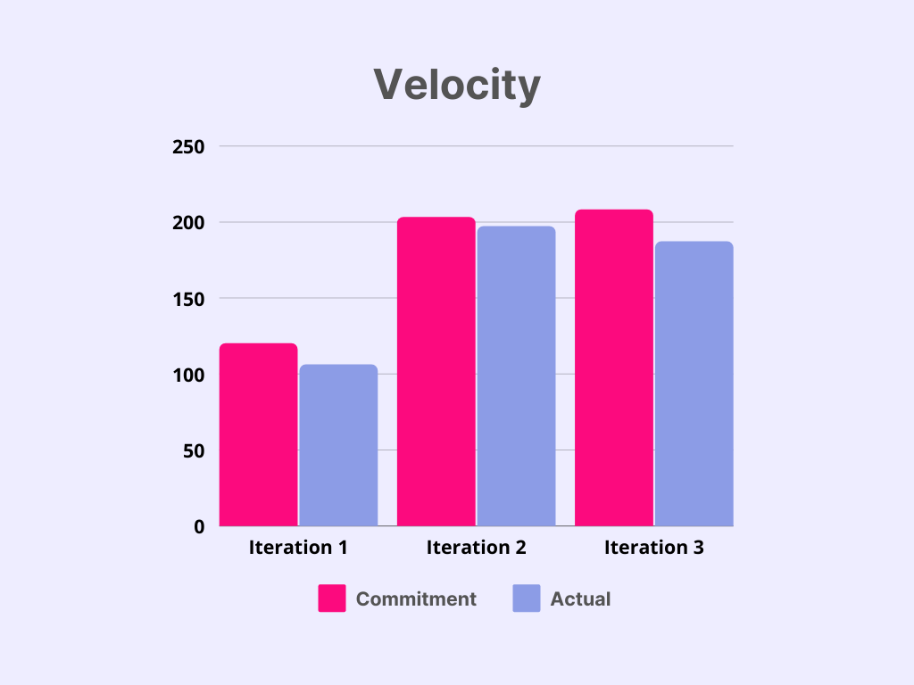

BicepGamers
Taking Breaks Improves Gaming Performance

About
Bicep Gamers (BG) is a fitness application that helps gamers exercise and take breaks
in between games to preserve longevity. It recommends the user a resting portion and an exercising
portion. The exercising portion is further aided with recommended exercises and instructional videos for
the exercises.
The app works by starting a new session when the user starts gaming. When the
user requests a break, the app recommends a break based on start session time. The recommended break is
split into two uneven portions: The resting and the exercising
portions:
1. The exercising portion of the break is filled with
recommended exercises and instructional videos for each exercise. The user can either select default
exercises or customized exercises that fit into the exercising portion of the break.
2. The resting portion of the break is aided with recommendations to avoid
screen time. The user has the freedom to end the break early and end the session itself. The user is
also not restricted to take a break at set times. It can request the app for a break when needed but,
the app does recommend taking a break if the user has not requested a break for prolonged
periods.
The main target audience of the application is gamers. Gamers can easily implement this
app into their routine because finishing a game is a natural cue to take a break. After a game, a gamer
can request to take a break. The resting portion is time away from the screen but the exercising portion
can also take place while the gamer is waiting in queue to get into the next game. This app aims to
reduce the health conditions and frustrations involved with competitive gaming.
There has been
an ease of access for computer devices in recent years and a great number of individuals have been
attracted to esports. Professional gamers practice up to 12 hours a day. While dedication like this has
contributed to the growth of the e-sport industry, the number of gamers, especially the younger
generation, with issues related to health conditions due to gaming has also increased. Gamers sit and
use unnatural wrist positions for an extended period. This can lead to back issues and bad posture.
Twisting wrists inwards to type and use the mouse can lead to wrist problems such as carpal tunnel
syndrome. Our app aims to reduce the severity of these conditions by recommending light exercises that
specifically target these muscle groups. Taking breaks also improves gaming performance. Our app aims to
reduce tilt by providing light exercises to relax the user prior to entering each game. This application
will be considered a success based on three criteria:
1. Improving
gamer performance
2. Improving gaming
health
3. Returning users
Improving gamer performance can be
assessed with comparing their W/L record. Improving gamer health can be assessed with a survey that
inquiries if gamers have reduced wrist pain, improved posture, and/or better mood while gaming. We will
also conduct a survey on the likelihood of continued use of the app. This survey will not only indicate
the conventionality of the app but also indicate if the app has become mundane after continuous use.
storing
Games Collection
Managing your favorite and frequently played games
customizing
Game Input
Adding as many games as you like with a variety of attributes to customize your games
tracking
Session Timer
Keeping track of allocated time between gaming and doing exercises
reporting
Sessions History
Recording usage history for users to monitor their habits and make reasonable adjustments
suggesting
Workout Videos
Including source of exercises' instruction videos during break time
For Gamer
This application is developed with an eye-catching interface suitable to attract and motivate gamers
to use
Exercise Habit
The application has a reference database of exercises to build exercise habits for gamers bit by bit
Improve Health
This application is built with the aim of directing gamers to a healthier life

I have learned a lot during this time, such as using different
testing methods in different iterative phases of the project build, fluent use of
android studio and writing Android programs, and efficient communication among team
members. Also, SOLID principles are the ones that help me the most, allowing me to
program and build without straying from the original design philosophy.
At the beginning of this, I was really struggled with Android Studio and didn't know how
to build an Android app. However, I am now more confident in mobile development. Through
this course, I also learn that coding is not just writing code but also include many
other things such as knowing how to write tests, refactoring with SOLID principles and
designing with architectures and design patterns.
Through this project , I have polished my skill of project planning.
It has given me valuable experience on distinguishing the priority of features,
accurately creating time estimates, and evenly splitting work between multiple
iterations.
I have learned the importance of design and branching patterns as
well as the different testing techniques for an android application. I understand the
use of agile methodology, why it’s important and how it helps building a quality
application.
I have learned a lot about the various facets of android app
development during this time. It was an amazing learning experience to implement the
concepts taught in class such as agile methodology, 3-tier architecture, use of design
patterns, SOLID violations and different testing methods.
Development Experience
We think this iteration went very smoothly, we added some features to the project and
polished the details of the project. We increased the number of times we merged our code, merging as
soon as a task was completed. Communication among team members is also more efficient, and we get to
know each other's tasks for overall project coherence.
Although there has been a lot of
progress, there is still room for improvement. We have different opinions on the UI details and
functions of the project, so we spend unnecessary time discussing and modifying the code. If the
blueprint was done at the beginning, the result would be much better than it is now. The mutual merging
between branches is still our pain point. As the project gets bigger and bigger, more and more files
need to be merged each time, so it takes too much time to complete the branch merge. The operation of
git and Android still needs to be strengthened.
The working atmosphere of our group is
commendable. Each team member has completed the assigned tasks and helped the team members in need as
much as possible, and will give praise when others complete their tasks perfectly.
In the end,
we both learned something valuable from this project, not just technically but as a team.

In the first iteration, because we didn’t know much about the entire project, we
estimated a longer time to complete the task, which resulted in our actual completion time being shorter
than the estimated time. The problem improved on the second iteration, and our estimated and actual
times were almost the same. Unfortunately, we overestimated on the third iteration the time it took to
test the system and fix technical debt left over from the previous iterations, which led to another
overestimation of how long it would take us.